工藝材質資料庫
探索各種材料經高精密雷射作用後的真實物理質感變化。
從天然實木、竹質、石材、金屬漆面到壓克力與特殊有機材質，單件即可起訂加工。
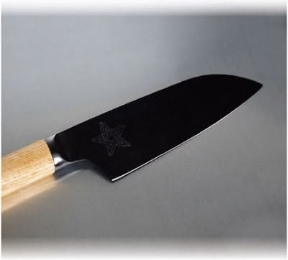
金屬表面漆層 (刀具)
高精密雷射精確汽化金屬表面抗蝕黑漆層，顯露出底層銀白金屬線條，手感平整光滑，耐磨防刮。
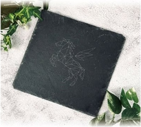
頁岩 (天然石板)
雷射作用於天然頁岩表層，形成對比鮮明的高雅灰白微凸雕紋，保有原生岩石粗獷紋理與厚實手感。
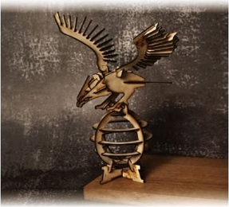
1mm 飛機木 (巴爾沙木)
質地極輕且易於精準加工，雷射細微切縫小、邊緣碳化整潔，適合立體拼裝模型、文創微型結構雕琢。
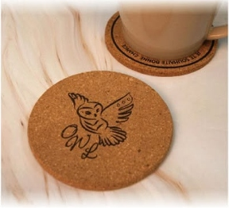
天然軟木
天然軟木微孔組織散發質樸木質香氣，雷射雕刻呈現溫潤深焦糖色澤，深淺立體感極佳，隔熱吸水必備。
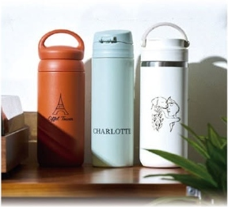
金屬表面漆層 (隨行保溫瓶)
精準去除粉體烤漆或陽極塗層，雕刻線條俐落銳利，完美顯現不鏽鋼金屬原色，打造客製質感隨身杯。
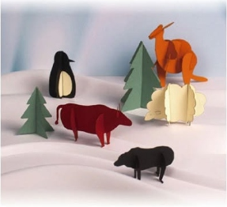
0.5mm 精密卡紙
無碳焦黑痕的高速精密刀模級雷射鏤空，可完成繁複微型結構、立體折紙與包裝卡片設計。
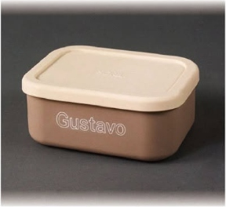
耐熱矽膠餐盒
環保耐溫矽膠表面淺雕印記，線條清晰不脫色、不產生碎屑毛邊，耐水洗且維持食品級衛生安全。
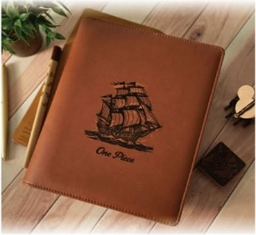
植鞣天然皮革
雷雕使皮革表層天然油脂微幅焦化，產生深邃典雅的復古烙印色澤，紋理手感溫厚細膩，隨時間散發光澤。
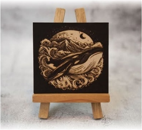
黑面塗層密底板 (MDF)
高密度均質板材結合表面塗層，雷射精細雕刻後呈現木質微黃對比線條，適合文創畫框、小型立板與掛飾。
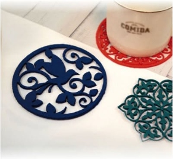
3mm 厚磅不織布 (毛氈)
雷射熱熔微封邊緣，切口平整俐落、無須擔心邊緣抽絲或脫線，適合杯墊、隔熱墊與布藝鏤空配件。
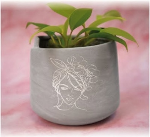
清水模水泥
粗獷質樸的水泥盆器表面經雷射汽化表層微粒，浮現出柔和精巧的白色線稿，極具現代極簡工業美學。
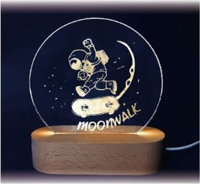
光學壓克力 (導光夜燈)
高透光光學壓克力板，經精密雷雕後雕刻線條均勻漫射 LED 光源，亮燈時呈現璀璨立體發光線條。
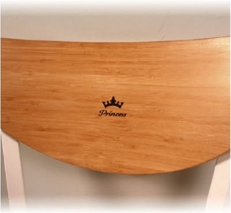
天然竹木板
天然竹纖維密度高且硬度韌性兼具，雷雕呈現深褐色沈穩炭化質感，散發淡雅東方竹藝氣息。
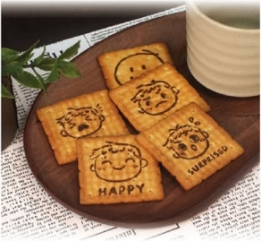
烘焙餅乾 (食品印花)
無接觸式雷射表面微溫烘烤焦化，在餅乾表面直接印製客製化圖案與文字，趣味創意烘焙周邊首選。
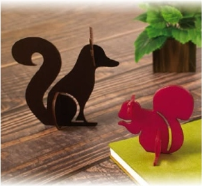
2mm 彩色壓克力
色彩鮮豔的壓克力板經雷射垂直高光切齊，切邊晶亮無毛刺，適合卡榫式組裝立體小動物與角色周邊。
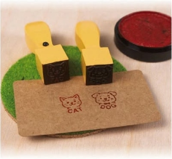
天然實木印章
質地紮實的硬木印章頂部與刻面，雕刻線條深遂銳利、沾墨蓋印層次分明，手感溫潤厚實。
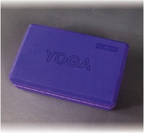
EVA 高密發泡泡綿
高彈性抗震泡綿表面精準凹刻字形與幾何線條，切面圓潤不變形，常見於運動瑜珈磚、工具收納內襯。
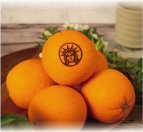
生鮮果皮 (柑橘表皮)
微米級表皮精細雕琢，僅蒸發果皮外層色素腺體而不傷及內部果肉，創造令人驚豔的節慶品牌驚喜。